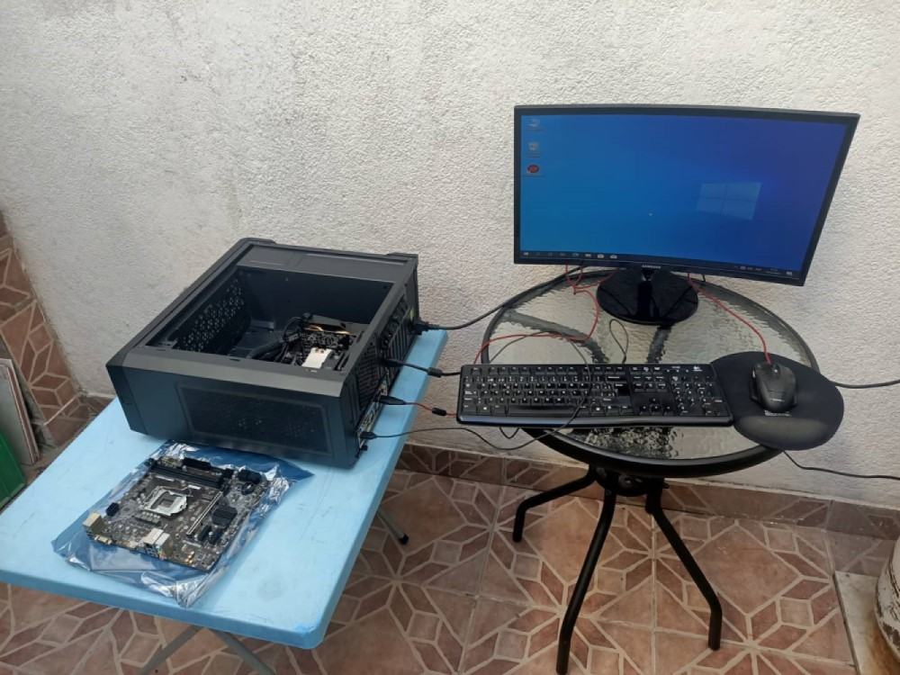

Nuestras Reparaciones

Nuestros servicios de reparaciones consta con armados y desarmados de PC completo, ya sea para limpieza profunda a las piezas integradas en una PC o Laptop. También en base al Software se le hace el formateo procedente al que se le aplican instalación de programas necesarios al Sistema Operativo.
Ver Reparaciones